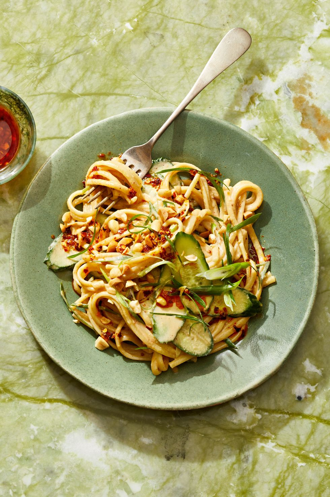

Sesame Noodles recipe

Description
Smooth peanut butter creates a swoon-worthy, creamy sauce. Pass the chili crisp at the table if you like a little extra spice.
Peanut butter and our super easy homemade tahini create the nutty, savory sauce for this crave-worthy noodle dish.
Ingredients
- 12 oz. linguine
- 1/3 c.Homemade Tahini
- 1/4 c.smooth natural peanut butter
- 2 1/2 tsp.reduced-sodium soy sauce
- 2 tsp.chili crisp, plus more for topping
- 2 tsp.pure maple syrup
- 1 1/2 tsp.rice vinegar
- 1 tsp.toasted sesame oil
- 1/2 tsp.grated ginger
- 1 clove garlic, grated
- 2 scallions, thinly sliced on bias
- 2 Persian cucumbers, thinly sliced on bias on mandoline
- Chopped roasted peanuts, for topping (optional)
Steps
- Cook pasta per package directions 1 minute past al dente. Reserve 1/2 cup pasta cooking water, drain pasta, and rinse under cold water to cool.
- Meanwhile, in large bowl, whisk tahini, peanut butter, soy sauce, chili crisp, maple syrup, rice vinegar, sesame oil, ginger, garlic, and 6 tablespoons water until smooth. Add rinsed pasta and toss, adding a splash of reserved pasta water as needed, until coated.
- Divide among bowls and top with scallions, cucumbers, peanuts, and chili crisp if desired.